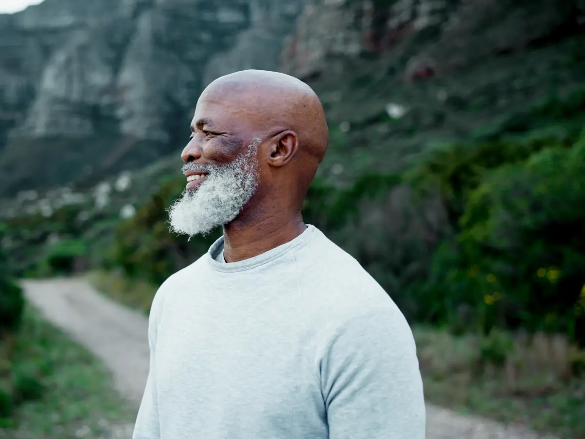
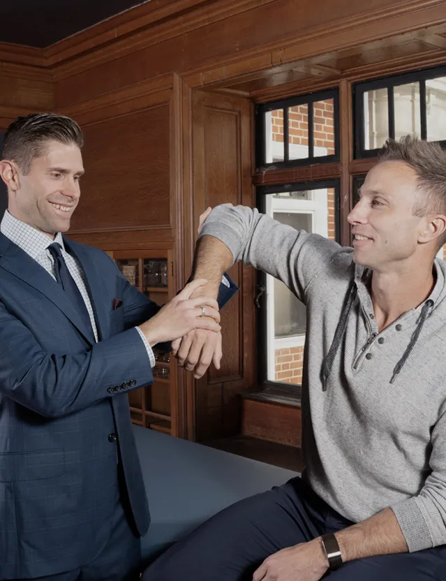
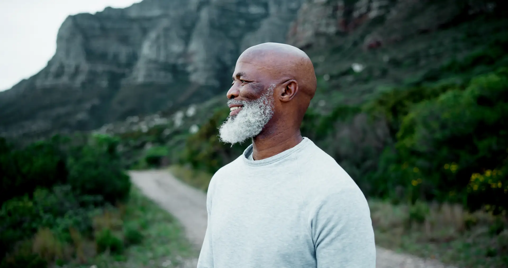

Vitality Orthopedics & Biologics
Knee or shoulder holding you back?
Dr. Connor Ziegler is a board-certified orthopedic surgeon who offers both surgery and regenerative treatment. He'll recommend what fits your knee or shoulder and plan your recovery from the first visit.
Free 15-minute call with Dr. Ziegler. No imaging needed.
"Dr. Ziegler spent almost two hours walking me through answers to all my detailed questions regarding my knee arthritis. Not something I was accustomed to."
Where You're Starting From

Road 1
The cortisone worked for a while, then wore off. The brace helps on good days.
You take the stairs one at a time now, and little by little your week has started to shrink around the joint. The last visit ended with "come back when it gets worse."
Dr. Ziegler is a surgeon, so he can tell you where your joint stands and what you can do about it today: rehab, regenerative treatment, or a combination.
"He has a conservative approach and definitely makes you feel confident in your health care choices."

Road 2
Most people in your spot dread the months after the operation more than the operation itself. You might be picturing weeks on the couch, relearning the stairs and losing a season of golf or skiing, with no idea what week six should feel like.
Dr. Ziegler maps out those months before surgery day, beginning with getting your body ready. He can add regenerative treatment to your recovery, and he follows your progress the whole way.
"I've had four previous knee surgeries before the one he did, his was much more extensive, and recovery pain was way less."
Meet Dr. Ziegler
Hear how he decides, in his own words.
Dr. Connor Ziegler did his sports medicine fellowship at The Steadman Clinic in Vail, one of the most respected programs in the country. His patients include athletes from local high schools and colleges up to the professional level.
He operates on knees and shoulders, and he also treats them with platelet-rich plasma and bone marrow concentrate taken from your own body.
His published research covers using these treatments alongside surgery, so he knows when they're worth adding to your recovery. Because he does both, he can recommend whatever your joint needs.
Plan on being there a while. Patients mention the time he spends more than anything else in their reviews. He walks you through what's going on inside the joint and answers every question before telling you what he'd do.
"Quality time was spent discussing my concerns, options and available treatments."
Every patient goes through the same three steps, which he calls the Vitality Orthopedic Recovery System™.
01
Dr. Ziegler examines the joint and goes over your MRI with you. X-ray and ultrasound are done right there in the office.
02
Dr. Ziegler chooses rehab, regenerative treatment, surgery or a combination, based on what the joint shows and what matters most to you.
03
Before treatment starts, you'll know what the recovery looks like, from preparing beforehand to rehab built around the activity you're getting back to, with regenerative support where it fits.

Not sure which road you're on? A free call with Dr. Ziegler is the place to start.
See If You're a CandidateQuestions
No. Wherever you're starting from, everyone starts the same way: a few questions and a free call with Dr. Ziegler.
Yes. He calls you himself, for about 15 minutes, to hear what's going on. If an evaluation makes sense, he books it with you on the call, and you meet him in person at the Simsbury office.
No. All of his care is self-pay, surgery included, and he doesn't bill insurance. The call is free, and on it he walks you through the investment for the evaluation and any treatment. At your evaluation, you get a flat price for your plan, with no deductibles or insurance claims, before you commit to anything.
When the schedule allows, you can be seen the same week, sometimes even the same day.
Then you'll hear that, and why. You're better off knowing after a few questions and a short call with Dr. Ziegler than after months of trying things.
Platelet-rich plasma and bone marrow concentrate, both taken from your own body. Treatment usually takes one to two hours, and patients can often go home the same day.
The sooner you know which road you're on, the sooner you can get moving on it. The questions take about a minute. If you're a fit, you'll book a free 15-minute call with Dr. Ziegler.
See If You're a CandidatePatients come from across the Farmington Valley, including Avon, Farmington and West Hartford.